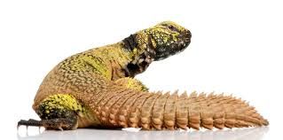
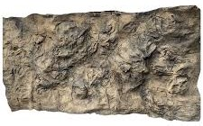
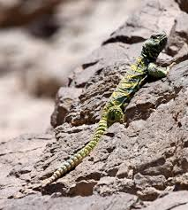

|  |
|
Here is an image of where uromastyx's reside
|
| Example of a reptile rocky enclosure background  |
| Image of a uromastyx in its natural habitat  |
Uromastyx's are a herbivorous lizard, this means they eat plants.
Here is a small list of plants and seeds they enjoy include:
Uromastyx is a genus of lizards which usually reside in northern africa aswell as parts of the middle east. The most profound feature of this type of lizard is their spiney/spikey tail, this tail is commonly used to hit predators, and protect the rest of their body when under cover.
for more information on this lizard; go and visit the wikipedia here